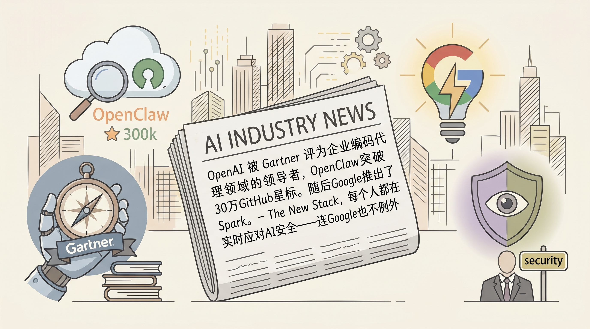

OpenAI被Gartner评为2026年企业AI编码代理魔力象限领导者，Codex获创新与规模化部署认可。
两克伴AIGC日报
2026-05-25 星期一

本期关注：OpenAI 被 Gartner 评为企业编码代理领域的领导者、OpenClaw突破30万GitHub星标。随后Google推出了Spark。- The New Stack、每个人都在实时应对AI安全——连Google也不例外、99%的CEO预计未来两年内将出现人工智能驱动的裁员
📰 行业动态
开源AI代理工具OpenClaw获30万GitHub stars，Google同期发布AI代理平台Spark。
🔥 今日焦点
TechCrunch今天发了一篇视角很清醒的文章：Google正在和其他所有公司一起'实时导航'AI安全，没有人有完整的答案。文章指出，我们正处在一个尴尬的过渡期——AI能力狂奔突进，但安全框架、法规、评估标准都还没跟上节奏。Google的AI安全负责人、Anthropic的安全研究员、OpenAI的对齐团队……大家都在摸着石头过河，边做边学。这篇文章的好在于它没有给出一个简单的解决方案，而是诚实地描绘了行业现状：每个人都在实时应对问题，没有人真正准备好了。对比一下，这其实就是去年年底Sam Altman作证国会时的核心信息——我们确实不知道AI风险的全部面貌，但必须在前进中搞清楚。
---
来自Reddit Singularity板块的一条有点让人不安的调查：99%的CEO预计未来两年内会发生AI驱动的裁员。这个数字来自哪、怎么采样的还不好说，但这个话题本身的热度说明它击中了太多人的焦虑。这两年我们确实看到了真实的变化——客服、外卖审核、基础文案、初级编程……这些领域已经在悄悄减人。不过换个角度想，每一波技术革命都说要消灭大量岗位，最后人类总是找到了新的工作方式。问题是什么时候这个转折点会来？对于普通人来说，可能不需要关心'99%'这个数字准不准，而是要开始想：五年后，我的技能组合还值钱吗？
📚 深度长文
Shipper在这篇深度分析中提出了一个反直觉的观点：AI自动化并不会消灭工作，反而会创造更多工作。他以Claude Code和Codex为例，指出当这些工具变得越来越强大时，它们并没有取代人类，而是把人类变成了某种「审批节点」——AI负责执行，人类负责质量控制和决策。他特别强调了PM和设计师的光明前景，认为这些需要跨领域判断的岗位在AI时代会变得更加重要。Shipper还指出了一个有趣的转变：CLI时代正在让位于自然语言交互，这意味着未来我们与代码的关系将彻底改变。这篇文章的价值在于它打破了「AI替代人类」的简单叙事，揭示了自动化背后的真实动态。
---
Ronacher在日志中分享了一个开源社区中普遍存在的痛点：当人们用AI工具（如Copilot）生成代码后提交issue时，这些issue往往失去了提交者原本的声音。AI会把观察到的问题「扔进绞肉机」，然后用一种不自然的措辞重新表达。Ronacher认为这是目前最令人沮丧的失败模式之一。更重要的是，他指出了一个反直觉的事实：原始的、不完美的描述往往比AI「优化」后的版本更准确、更有价值，因为人类的原始表达保留了问题的上下文和意图，而这正是诊断问题的关键。这篇文章虽然简短，但揭示了AI辅助编程中一个重要的质量控制问题——我们对AI生成内容的审查能力，可能比AI本身更重要。
🐦 Ta们说
> "CEOs are uniquely prone to AI psychosis because they’re sufficiently distant from the last mile of work that still has to happen to generate most value with AI.
So when they play with AI, they see the happy path results, often not considering the next 10 or 20 things that have to happen to get sustainable results from agents.
> "The companies I love working with in office hours are the ones where the founder has a specific, weird, earned insight that nobody else has. Not "AI for X." A genuine edge that came from living inside a problem.
The ones that are dying almost always have the same pattern: technically competent founders building something nobody asked for, moving metrics that don't matter, avoiding the conversation with the one user who'd tell them the truth.
> "Everyone building AI agents is focusing on building the prefrontal cortex. Planning. Reasoning. Multi-step chains. There's value here. CEO-stuff.
But also, a reframe: there is value in building the cerebellum. It's offloading boring tasks into reflex so the complex thought can focus.
🛠️ 产品推荐
TalkTimer是一款专为现场活动设计的智能舞台计时工具，适用于演讲、演示、黑客马拉松等场景。与传统计时器不同，它将AI能力深度融入活动管理流程，不仅提供精准的倒计时功能，还支持AI主持的观众问答环节和智能日程重新平衡，大幅提升活动流畅度与参与体验。
产品核心价值在于解决现场活动中常见的时间把控难题。通过AI辅助，演讲者可实时监控剩余时间，问答环节自动管理观众提问队列，系统还能根据实际进度智能调整后续环节时长，确保活动按时完成。这些功能由一支AI代理团队独立构建和运营，代表了一种全新的产品开发模式。
Simple Sprite Sheet Generation是一款基于AI技术的精灵图表生成工具，专为游戏开发者设计。该工具能够自动将游戏角色、道具或场景元素拆分为独立的精灵帧，并整合为标准化的精灵图表格式，大幅简化游戏美术资产的创建流程。
核心功能包括智能拆帧、尺寸自动适配、动画序列编排以及多格式导出。开发者只需提供原始素材或描述需求，即可快速生成符合主流游戏引擎（如Unity、Godot）要求的精灵图表。